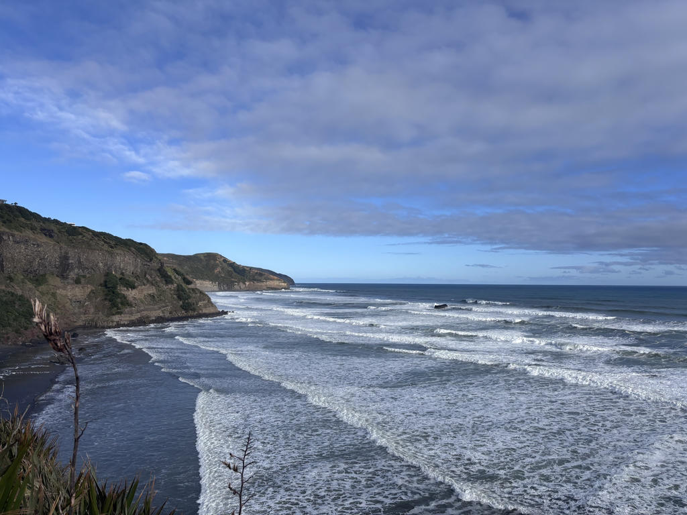
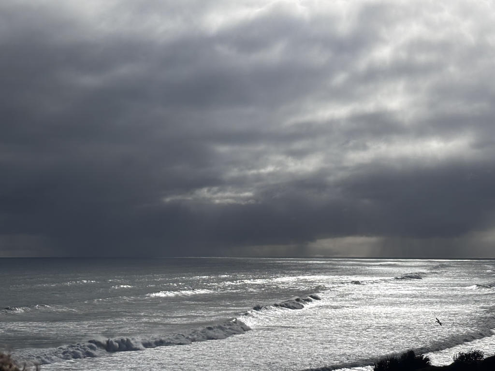
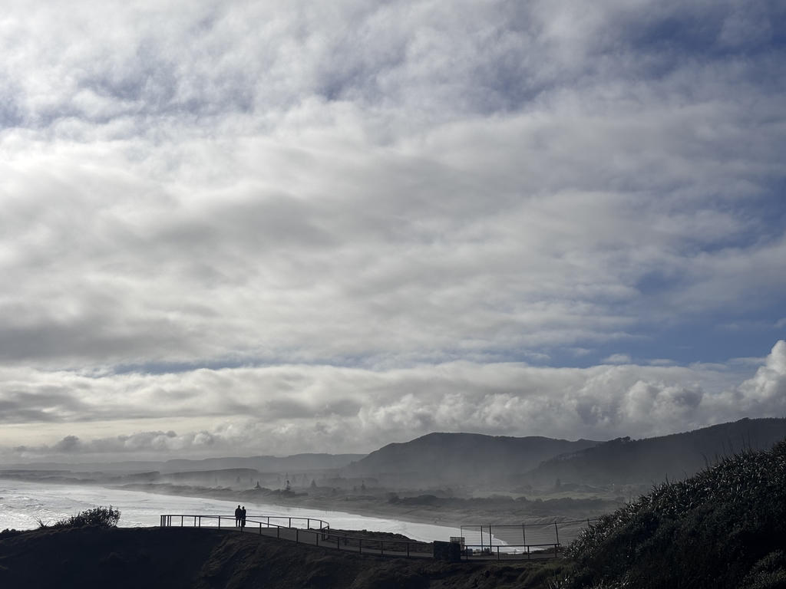
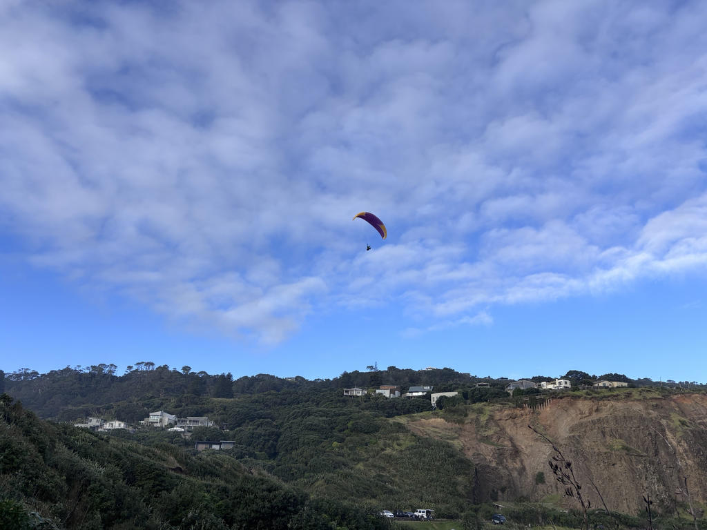

Muriwai半日游
天气算不上晴朗，天空时而飘来几缕细雨，时而又裂开一道缝隙，让温暖的阳光洒向大地。云层与阳光不断交替，像是冬日里最温柔的问候。正是在这样变幻的天气中，我和朋友驱车前往奥克兰西海岸的 Muriwai Beach 与著名的鸟岛，开启了一段惬意的周末旅程。
中午十二点，我们从 Auckland City 出发，沿着蜿蜒的公路一路向西，约四十分钟后便抵达了目的地。刚下车，眼前便是一望无际的塔斯曼海，海浪一层接着一层拍打着岸边，发出低沉而有力的轰鸣。最吸引我的，是那片黑色的沙滩。不同于记忆中金黄或洁白的海岸，这里的沙粒乌黑细腻，据说源自远古火山喷发后形成的玄武岩，经过漫长岁月的风化与海浪冲刷，最终化作今日这片独特的黑沙。这是我第一次见到黑色沙滩，不禁蹲下身捧起一把细沙，感受来自地球深处的痕迹。

海滩旁，一片片沙丘被木栅栏围了起来，禁止游客进入。原来，这些沙丘并不仅仅是风吹起的沙堆，它们是抵御海浪侵蚀、保护内陆生态的重要天然屏障，同时也是许多海滨植物赖以生存的家园。一旦遭到踩踏，植被遭到破坏，风便会轻易带走松散的沙粒，使沙丘逐渐消失。因此，人们宁愿少走几步，也愿意让自然保持原本的模样。
虽然天气不算理想，海滩上的游客却络绎不绝。有人牵着狗，在沙滩上尽情奔跑、抛球嬉戏；有人只是静静地沿着海岸散步，任由海风吹乱头发。最让我印象深刻的，是几位冲浪爱好者。面对寒冷的海水，他们毫不犹豫地迎着巨浪划向远方，其中竟还有一位赤裸着上身，只穿着短裤便跃入冰冷的海中。对于来自东方文化的我而言，这样随性而自由的生活方式多少带来了一丝文化上的冲击，但也让我感受到人与自然之间毫无拘束的亲近。

离开海滩，我们沿着步道来到悬崖上的鸟岛。海浪千百年来不断拍击火山岩海岸，坚硬的岩石被侵蚀成凹凸不平的峭壁、岩柱与平台，形成了一座天然的海鸟王国。陡峭的岩壁既远离天敌，又能抵御海浪侵袭，因此成为无数海鸟理想的筑巢地点。
这里最著名的居民，是澳洲塘鹅（Australasian Gannet）。它们洁白的羽毛配上金黄色的头颈，在阳光下格外醒目。成群的塘鹅密密麻麻地栖息在岩石上，有的低头整理羽毛，有的耐心孵蛋，还有的展开双翼，从数十米高的悬崖腾空而起，在海风中优雅地滑翔。偶尔，它们会从高空急速俯冲，以近乎垂直的姿态扎入海中捕鱼，那一刻，力量与优雅融为一体，让人不禁感叹大自然赋予生命的神奇本能。

返程途中，我们又遇见了几位玩动力风筝滑翔的人。他们操控着巨大的风筝，借助强劲的海风腾空而起，在空中不断盘旋、转向。远远望去，他们仿佛一只只自由翱翔的海鸥，在蓝天与海浪之间尽情飞舞。我忍不住举起相机，录下了许多精彩的画面，希望能把这一刻的自由永远留住。
夕阳渐渐西沉，天空开始染上一层温暖的橘红色。朋友提着一个小桶，打算趁退潮时捡一些青口——这种新西兰海边常见的贝类，不仅鲜美，也是当地人喜爱的天然食材。然而，我们寻觅了许久，却一无所获。虽然没有满载而归，但望着逐渐铺满海面的晚霞，谁也没有觉得遗憾。

回家的路上，晚霞一路陪伴着我们。金色的余晖透过车窗洒进车内，远处的山峦渐渐隐没在暮色之中。一天的旅程，没有轰轰烈烈的故事，也没有刻意安排的惊喜，却因为黑色的沙滩、翱翔的海鸟、自由的风筝，以及那片宁静的晚霞，而变得格外难忘。
旅行的意义，也许并不在于抵达了多少地方，而是在某一个平凡的午后，与自然相遇，与风同行，也让自己的心，短暂地停靠在海浪声中。